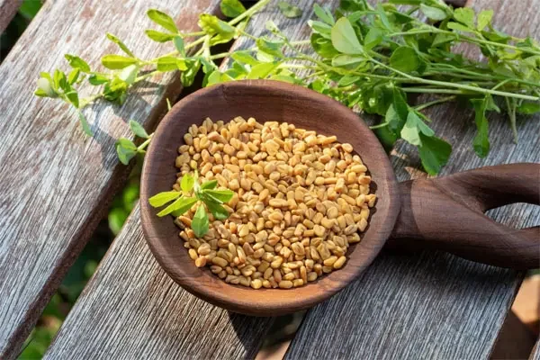
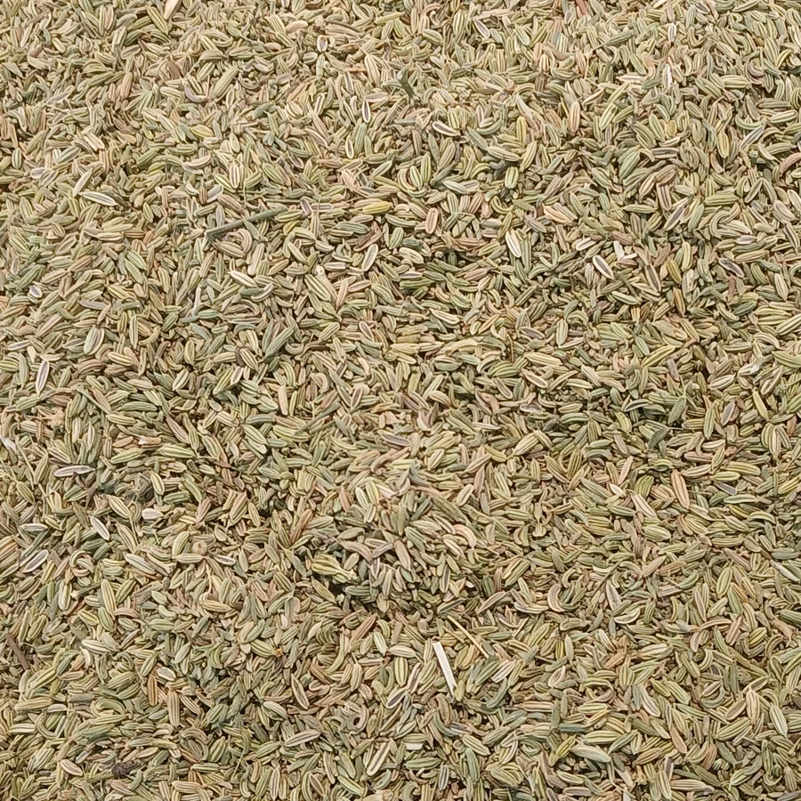
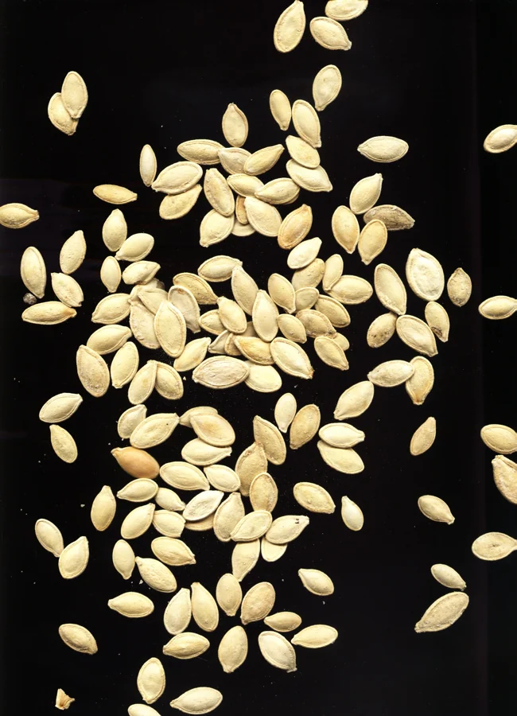

Black seeds (Nigella)
A seed ingredient used in seasoning and bakery formulations; confirm grade and cleaning requirements.
Ingredient profile ↗Browse seeds & spices in Verdleaf’s botanical catalogue. Review individual ingredient profiles, enquiry forms and sourcing requirements.
Purity, seed or fruit size, foreign matter and grind specification.
A seed ingredient used in seasoning and bakery formulations; confirm grade and cleaning requirements.
Ingredient profile ↗
An aromatic seed ingredient for seasoning, baking and infusion blends.
Ingredient profile ↗
A versatile ingredient for savory formulations; confirm seeds or leaves when requesting specifications.
Ingredient profile ↗
An anise-like aromatic ingredient for flavor blends; confirm the plant part and form.
Ingredient profile ↗
An ingredient associated with seed-based seasoning blends; confirm commercial form.
Ingredient profile ↗
A seed ingredient for bakery and food formulations; confirm processing and grade.
Ingredient profile ↗
An aromatic ingredient for infusions and bakery flavor blends.
Ingredient profile ↗
A warm aromatic spice for food manufacturing and blended seasonings.
Ingredient profile ↗
A seed ingredient for bakery and food applications. Specify cleaning and processing requirements.
Ingredient profile ↗
Seeds for food manufacturing; confirm form and grade.
Ingredient profile ↗
Seeds listed in Verdleaf's catalogue; confirm processing and commercial requirements.
Ingredient profile ↗